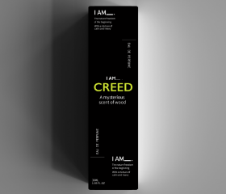
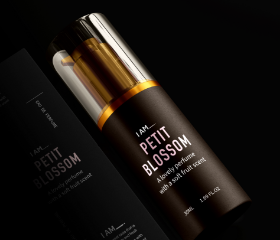
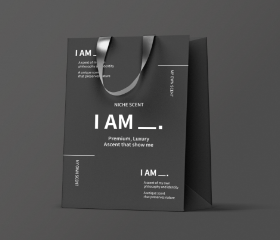

- I AM 향수 패키지 디자인
- I AM Perfume Package Design
- 제작 기간 : 2021 . 03 . 02 ~ 2021 . 06 . 06
기여도 : 개인 100%
사용 프로그램 : Adobe Illustrator / Adobe Photoshop
2021 Blue Awards 공모전 입선
- 코로나 19로 인해 마스크가 일상생활화 되어 향수가 각광받고 있다.
니치 향수란, 소수의 취향을 만족시키는 프리미엄 향수다.
나를 표현할 수 있는 향을 주제로 하여 향수 및 캔들 패키지를 디자인하였다.
블랙 컬러와 비비드한 컬러를 사용하여 고급스럽지만
때로는 캐주얼한 모습이 보여지도록 디자인하였다.

-
 BOX
BOX - 니치향수 패키지로 고급스러움을 드러내고자
타이포그래피를 활용하여 디자인 하였고,
각 박스는 향수의 향에 따라 떠오르는 컬러로
각각 다르게 활용하였다.

-
 LABEL
LABEL - 박스에 활용된 정보에서 꼭 필요한 정보들만 추려
디자인하였고 이 또한 각 향과 연관되는 컬러를
활용하여 다르게 디자인하였다.

- BAG
- 전반적인 디자인은 박스와 같지만, 여러 향수를
담는 용도로 쓰이는 종이가방이므로 특정 컬러를
사용하는 것이 아닌 블랙 앤 화이트를 활용하여
디자인하였다.